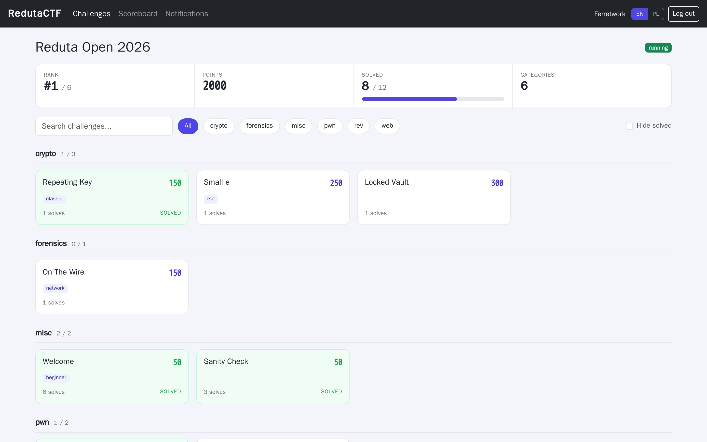
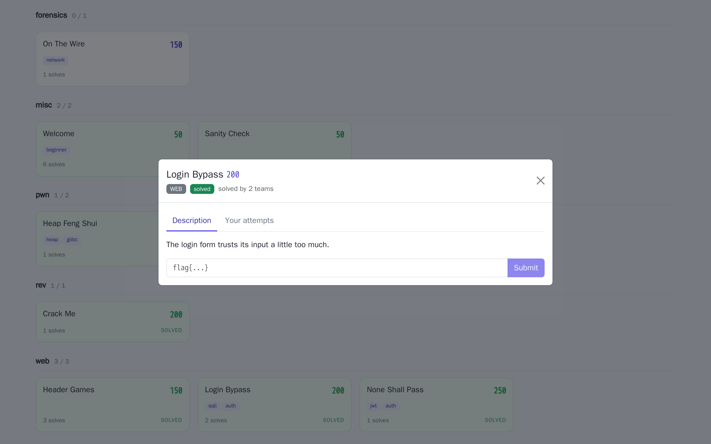
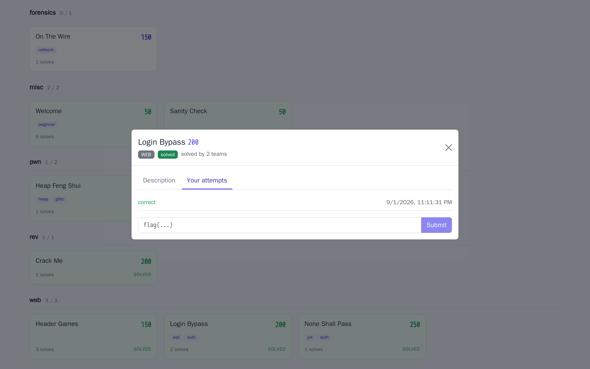
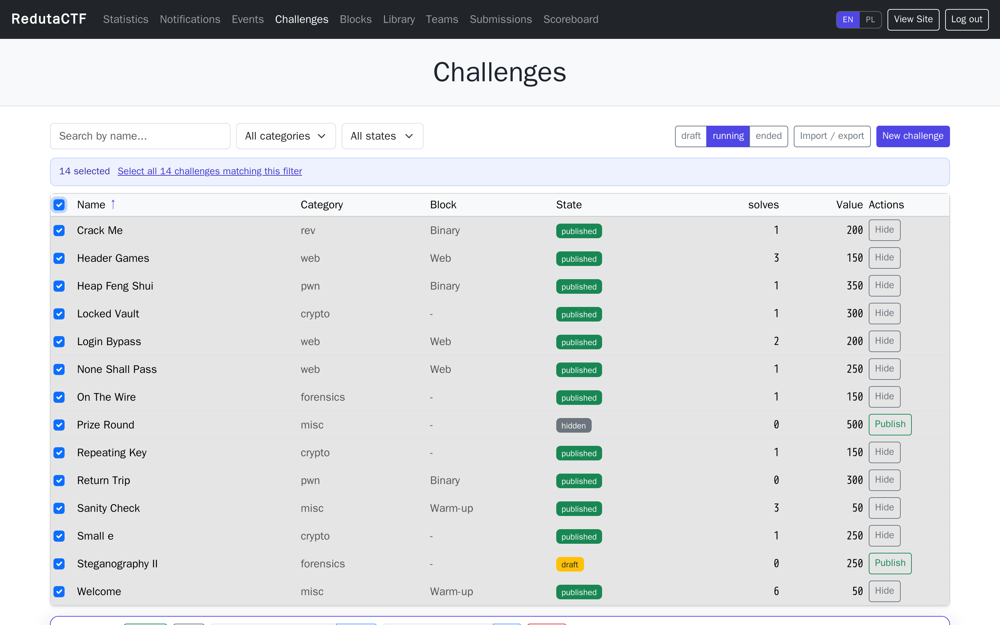
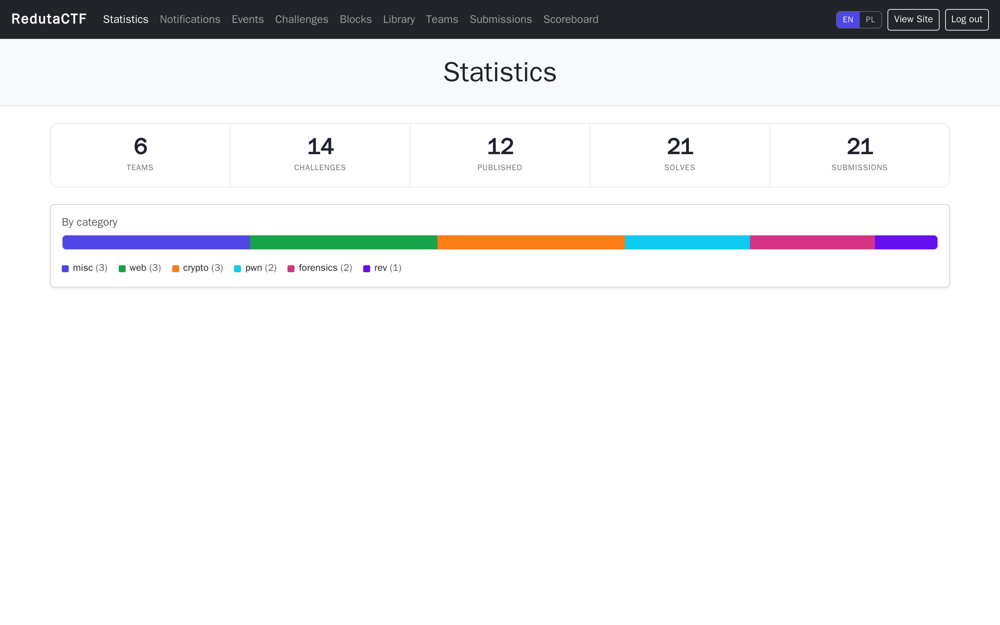
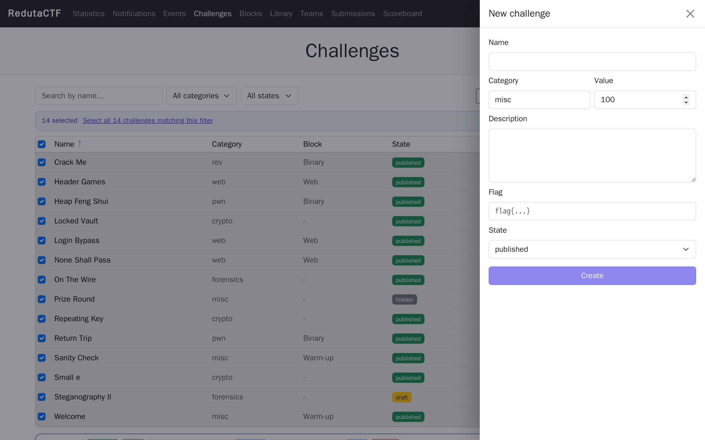
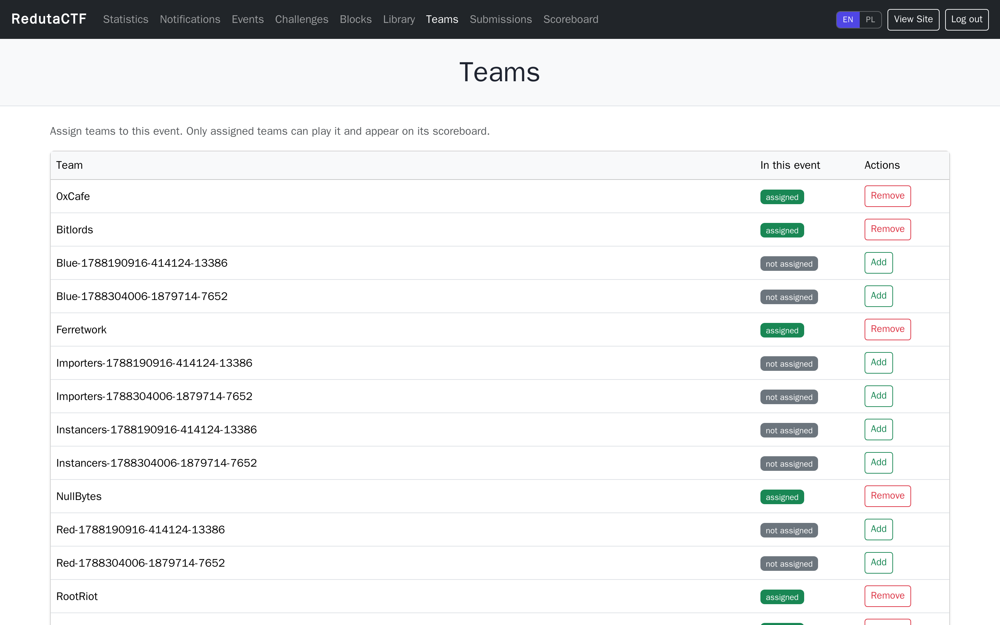
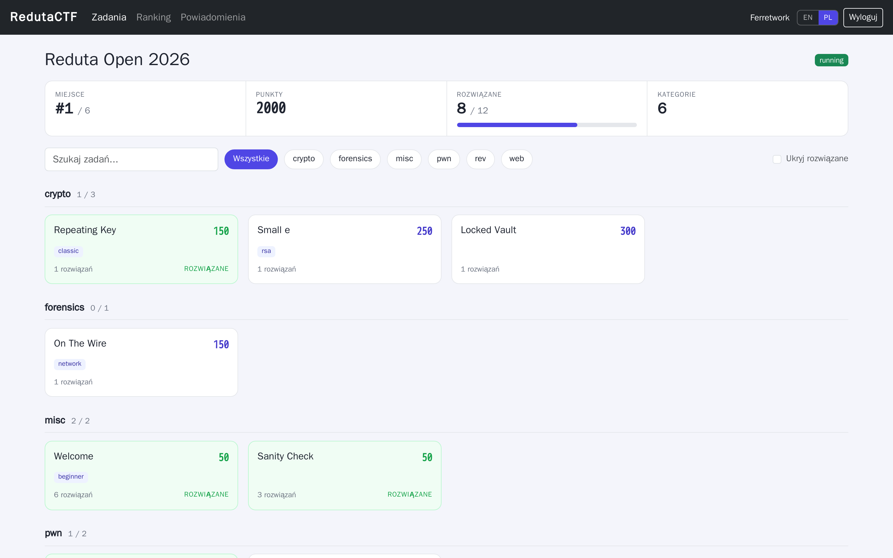

Overview
RedutaCTF is a self-hosted platform for organizing Capture The Flag competitions.
Organizers build challenges once and reuse them across events, group them into blocks with time
windows and unlock rules, register teams, and run scoring in real time. Players form a team, work
through challenges by category, and submit flags on a live board. The whole thing runs as a single
docker compose up: an API server, a background worker, PostgreSQL, Redis, a reference
King of the Hill plugin, and a web UI. The interface is available in English and Polish.
For organizers
A challenge library, block scheduling, transactional bulk actions with undo, notifications, CTFd import and export, and a fast admin panel.
For players
A progress strip, a searchable board by category, a task modal with your attempt history, and a live scoreboard with a per team chart.
For hosts
One static Go binary plus Postgres and Redis. No heavy runtime, trivial to self-host, scales out horizontally.
The name: Reduta Ordona
A reduta is a redoubt: a small, self-contained earthwork fort, thrown up quickly and expected to hold a position against a much larger force. The name of this project comes from "Reduta Ordona" ("Ordon's Redoubt"), one of the best known poems in Polish literature, written by Adam Mickiewicz around 1832.
The poem describes the defense of a small redoubt during the Russian storming of Warsaw on 6 September 1831, at the end of the November Uprising. In it a tiny, outnumbered position stands against wave after wave of assault, and its commander, the artillery officer Julian Konstanty Ordon, is depicted firing the powder magazine so the redoubt goes up in one enormous blast rather than falling. The scene is more legend than exact history (the real Ordon in fact survived), but as a piece of writing about a small work holding under overwhelming pressure it is unforgettable.
That image is exactly the right metaphor for what this software has to do. A CTF scoring engine is a small, well-built position that has to stay standing at the one moment everything is thrown at it: the final hour, when hundreds of teams refresh the scoreboard and hammer the submit endpoint at the same time. The whole design goal, keep it correct and keep it fast precisely when the load is overwhelming, is the redoubt idea. The name is deliberately Polish, and the project grew out of that image.
reduta.Why Reduta exists
CTFd is the tool most people reach for, and it is genuinely good. But at large events it gets slow, and the slowness is not only about the language. CTFd runs on Python and Flask, and its default deployment compounds a few architectural choices that hurt under load:
- Synchronous workers that handle one request each, so a few dozen concurrent users saturate them.
- N+1 queries when listing challenges: each challenge separately pulls its tags, hints, files and solve count, so 200 challenges turn into hundreds of queries per refresh.
- A scoreboard recomputed with heavy joins over the submissions table on every request, instead of keeping a denormalized standing.
- An admin table that renders every row server-side without virtualization or server-side paging.
- Caching that is optional and often left off.
Reduta keeps the same ideas but rebuilds them on an architecture that removes those bottlenecks. It uses Go and a single static binary, a scoreboard read straight from a denormalized projection, indexes and cursor pagination, a Redis cache, asynchronous workers for heavy jobs, and WebSocket push instead of polling. The result is lower and more predictable latency when hundreds of teams refresh and submit at the same time, which is exactly the moment a CTF platform tends to fall over.
The half-applied bulk bug
The other reason is reliability. A recurring annoyance in large admin panels is a bulk operation that only partially applies: you select many challenges, run an action such as publish, and only some of them actually change, with no clear error to tell you which. You are left clicking through the table checking by hand. In Reduta every bulk action runs as a single database transaction, reports exactly how many objects it affected, writes one audit entry, and keeps an undo snapshot. It is all or nothing: you never end up in a half-applied state, and if you change your mind you can reverse it in one click.
How it works
The flow from an empty instance to a running competition:
- Build challenges. Add them to a reusable library or straight into an event, set category, points and flags, and group them into blocks with schedules.
- Create the event. An event embeds challenges at a pinned revision with its own points, visibility and windows. State moves draft, running, ended.
- Players form teams. A player registers, then creates a team or joins one with an invite code. One team per player, shared across the platform.
- Admins assign teams. Only teams assigned to an event can open it, submit flags and appear on its scoreboard.
- Players solve. The board groups tasks by category and shows locked and scheduled states. Flags are submitted from a task modal; wrong guesses are hashed, never stored in plaintext.
- Scoring is live. Static or dynamic points, first blood bonuses, rate limiting, and a denormalized scoreboard that updates over WebSocket as solves land.
Player experience
The player view is built to be scanned and operated quickly, not read top to bottom. Everything a competitor needs to answer "where do I stand and what should I do next" is on one screen.

What the board gives you
- Progress strip. Live rank out of the field, current points, a solved X / Y bar, and how many categories are in play.
- Search and filter. Filter by text, jump to a category with a chip, or hide everything you have already solved to focus on what is left.
- Dense, informative cards. Points, tags, a solve count, and a distinct look for solved, locked and scheduled challenges, so the whole board reads at a glance.



Admin experience
The admin panel is a separate surface with its own dark navigation: statistics, notifications, events, challenges, blocks, the library, teams, submissions and the scoreboard. A View Site button drops you back into the player view, and a direct Admin Panel button in the player navigation brings organizers back, the same pattern CTFd uses.

Bulk work that cannot half-apply
Selecting rows, or selecting everything matching a filter, brings up a sticky action bar: publish, hide, assign to a block, add a tag, or delete. Every action runs as one transaction, reports how many challenges it changed, and offers an Undo for the reversible ones. Deletes go through a typed confirmation so a large, irreversible action is deliberate.




Languages
The interface ships in English and Polish, switchable from an EN / PL control in the navigation and on the sign-in and onboarding screens. The choice is stored in the browser, so it survives reloads and applies across the whole app, both the player view and the admin panel. Adding another language is a matter of adding one dictionary; there is no build step tied to a specific locale.

Architecture
Reduta is a modular monolith, not a set of microservices. One reduta-server process
serves the HTTP API and WebSocket connections; one reduta-worker process runs background
jobs on a Redis queue. Module boundaries are enforced by package structure and an import linter rather
than by the network, which keeps the system simple to run and reason about at this scale.
- Language: Go 1.23. A single static binary makes self-hosting trivial and gives predictable latency without garbage-collection stalls of hundreds of milliseconds.
- Storage: PostgreSQL 16 as the single source of truth (JSONB for flexible challenge config), Redis 7 for cache, rate limiting, pub/sub fan-out and the job queue.
- API first: the admin panel and player view are a separate React single-page app that talks to a versioned JSON API. The public scoreboard can also be embedded.
- Plugins out of process: a plugin is a separate HTTP service that talks to the core over signed webhooks and a narrow token-scoped API. It cannot crash the core and can be written in any language, which is how King of the Hill is wrapped rather than rewritten.
Performance
Performance is treated as an architectural property, not a language contest. The main levers:
- Denormalized scoreboard. Standings live in a
scoreboard_entriesprojection updated transactionally as score events are written. The scoreboard is never recomputed by aggregating over submissions in the request path. - Cache. Scoreboard responses are cached in Redis and invalidated on every score change, so a projector screen refreshing constantly costs almost nothing.
- No N+1. List endpoints return light DTOs and avoid per-row queries. The rule is: the number of SQL queries for a list does not grow with the number of rows. Solve counts for the whole board, for example, come from one grouped query, not one query per card.
- Realtime push. Solves and challenge changes are pushed to clients over WebSocket, so the UI does not poll.
- Async work. Heavy operations such as imports and large bulk actions can run on a worker queue rather than blocking a request.
Every step is verified by an end-to-end smoke suite that runs on each change, so regressions in these paths are caught early.
Data model
The biggest departure from CTFd is that a challenge is not trapped inside a single event.
| Entity | What it is |
|---|---|
| challenges | The reusable library, independent of any event. |
| challenge_revisions | Immutable content versions. Editing creates a new revision, so history and rollback are free. |
| event_challenges | A specific revision embedded into an event, with its own points, state, block, schedule and unlock rule. |
| blocks | Named groups of challenges within an event, carrying schedules and unlock rules. |
| teams, team_members | Global teams. One team per player, joined with an invite code. |
| event_teams | Which teams an admin has admitted to an event. |
| submissions | Every attempt. Wrong guesses stored as a hash, correct solves marked, unique per team and challenge. |
| score_events | A single stream of point changes: solve, hint, award, penalty, adjustment. Unique on (event, source, ref) for idempotency. |
| scoreboard_entries | The denormalized standing, updated from score events. |
| bulk_jobs, audit_log | Every bulk action's undo snapshot and audit record. |
Cloning a challenge is then natural: it is a new library challenge with a copy of the latest revision, or the same challenge embedded again into another event without copying anything.
Realtime
Clients open a WebSocket for an event. The server publishes messages when the scoreboard moves, when challenges change (state, schedule, unlocks), and when an admin sends a notification. Fan-out across multiple server instances goes through Redis pub/sub, so the system scales horizontally without clients noticing. Notifications appear as a live toast for every player in the event, and the board and scoreboard update themselves without a manual refresh.
Security
The users of this platform are attackers, so hostile input is the default assumption.
- Passwords hashed with argon2id; sessions are server-side, the cookie holds only a random token.
- Flags are compared as salted hashes; wrong submissions are stored hashed, never in plaintext, so the database does not leak attempts, and neither does the Your attempts view.
- Per-team dynamic flags (an HMAC of the event, team and challenge) make a leaked flag useless for another team.
- Submissions are rate limited per team with backoff.
- Design intent for later hardening: markdown sanitization for challenge descriptions, an allowlist for git-sync and webhook targets to prevent SSRF, and per-instance network isolation for challenge containers.
Challenge library
Challenges are authored once and reused. Each edit produces a new immutable revision, so you get history and one-click rollback. A challenge can be cloned into a variant, or embedded into an event pinned to a specific revision, so fixing a challenge in the library does not silently change a competition that is already running.
Scoring and flags
- Static or dynamic points. Static is a fixed value; dynamic decays with the number of solves (the initial value is used until full decay lands).
- First blood. The first team to solve a challenge gets a configurable bonus, recorded as a separate award in the score stream.
- Idempotent awards. Everything that changes points is a score event, unique per source and reference, so a retried write never double counts.
- Flags. Normalized and hashed; case sensitivity is per flag. Per-team dynamic flags stop flag sharing.
- Tie-break. Points first, then earliest last solve.
Scheduling and unlocks
Blocks and challenges carry availability windows described with RRULE (the iCalendar recurrence format), so you can open a set of tasks daily at a fixed time, or once for a fixed duration. A challenge without a schedule inherits its block's; a block without one inherits the event's.
Unlock rules gate challenges per team. The evaluator is a pure function over a team's state and supports combinations of: a specific challenge solved, a points threshold, a solve count, a deadline, and a whole block completed. Locked challenges are shown so players know what to aim for.
Teams and events
Teams are global. A player registers, then creates a team and becomes its captain, or joins an existing team with its invite code. There is one team per player across the platform. Admins decide which teams take part in each event by assigning them; only assigned teams can open the event, submit flags and appear on its scoreboard. Multiple events can run on one instance at once, and a team can be admitted to several of them.
Bulk admin actions
At 200 challenges the admin panel is where most time goes, so bulk operations are first class. You select rows, or select every row that matches a filter, and apply an action: publish, hide, archive, assign to a block, add or remove tags, set a schedule, or delete. Each bulk action:
- runs as a single transaction, so it never half-applies;
- reports exactly how many objects it touched;
- records one audit entry with the selector and the affected ids;
- keeps an undo snapshot for the reversible ones.
This directly fixes the class of bug where a bulk operation appears to run but only some of the selected challenges actually change.
Import and export
An event round-trips as JSON, including blocks and challenges with their hashed flags. Import runs with an optional dry run that returns a plan (created, updated) before anything is written, and is idempotent by title. A CTFd export can be imported directly, mapping challenges, flags and points, so migrating an existing competition is a single step.
Plugins and King of the Hill
A plugin is an external HTTP service. The core never loads its code. Registration provides a manifest and a token; the core sends signed webhooks (an HMAC over timestamp and body) for events like a solve or a minute tick, and the plugin calls back a narrow API to grant idempotent awards, list teams, or post announcements.
King of the Hill ships as a reference plugin: on each tick it awards the current holder of a target,
verified against the core's award endpoint. Wrapping an existing King of the Hill project means
pointing its holder detection at this plugin, not rewriting it. A small operator tool,
reduta plugin verify, checks that a plugin accepts signed webhooks, is idempotent on
redelivery, and rejects bad signatures.
The plugin protocol
The core pushes signed webhooks to the plugin. Every delivery carries three headers: a timestamp, a
signature, and a unique delivery id. The signature is an HMAC-SHA256 over
timestamp + "." + body using the shared plugin secret, so a plugin can reject anything
that was not sent by the core or was tampered with. The delivery id lets the plugin drop a
redelivery without acting twice.
X-Reduta-Event: tick.minute X-Reduta-Timestamp: 2026-09-02T10:00:00Z X-Reduta-Delivery: d3f1... # dedupe key, idempotent handling X-Reduta-Signature: sha256=<hmac(secret, timestamp + "." + body)>
To change points, the plugin calls back a single narrow endpoint with its bearer token. Awards are
idempotent by ref_id, so a retried tick never double counts:
POST /api/v1/plugin/v1/awards Authorization: Bearer plg_...
{"event_id":"...","team_id":"<holder>","points":5,
"ref_id":"tick:2026-09-02T10:00:00Z:hill-5","reason":"KotH tick hill-5"}
Connecting the dedicated King of the Hill
The standalone King of the Hill project (vulnerable hills, beacon agents, and its own scoreboard) keeps deciding who holds each hill. The bridge just feeds that holder into an event here, so a King of the Hill game can score on the same board as jeopardy challenges. Wiring it up:
- Register the plugin in the admin panel (or
POST /plugins) to get aplg_token and set the shared webhook secret. - Run the bridge next to the core and point it at the event and the King of the Hill scoreboard.
The reference
koth-pluginis configured entirely with environment variables:
# the koth-plugin bridge (docker compose service) KOTH_WEBHOOK_SECRET shared secret, must match the plugin registration KOTH_CORE_URL http://server:8080 # this core KOTH_PLUGIN_TOKEN plg_... # issued at registration KOTH_EVENT_ID the event the game scores into KOTH_TARGET which hill/target this bridge scores
- Map each King of the Hill team to a team here, and have the bridge read the current holder from the King of the Hill scoreboard on each tick.
- Before the event, run
reduta plugin verifyto confirm the bridge accepts signed webhooks, is idempotent on redelivery, and rejects bad signatures.
Self-hosting
Development and small deployments run on Docker Compose. One command brings up the API, worker, database, cache, the reference plugin, and the web UI:
docker compose up
Configuration is entirely environment variables, so the single binary is easy to run without a config file. The important ones:
| Variable | Purpose |
|---|---|
| REDUTA_DATABASE_URL | PostgreSQL connection string. |
| REDUTA_REDIS_ADDR | Redis host and port. |
| REDUTA_HTTP_ADDR | Listen address for the API. |
| REDUTA_SESSION_TTL | Session lifetime. |
| REDUTA_SUBMIT_RATE_PER_MIN | Flag submissions per team per minute. |
| REDUTA_FLAG_SECRET | HMAC secret for per-team dynamic flags. |
| REDUTA_BOOTSTRAP_ADMIN_EMAIL / _PASSWORD | Owner account created on first start. |
Migrations are embedded in the binary and run on startup, so a fresh database becomes a working instance with no extra steps.
API reference
A versioned JSON API under /api/v1. Errors follow RFC 9457
(application/problem+json). A selection of endpoints:
| Method and path | Purpose |
|---|---|
| POST /auth/register, /auth/login | Account creation and sign in (session cookie). |
| POST /teams, /teams/join | Create a global team, or join by invite code. |
| GET /me/team | The caller's team and invite code. |
| POST /events | Create an event (admin). |
| POST /events/{id}/event-teams | Assign a team to an event (admin). |
| GET /events/{id}/challenges | Challenge list with solve counts, gated by schedule and unlocks. |
| POST .../challenges/{ec}/submit | Submit a flag. |
| GET .../challenges/{ec}/attempts | Your team's attempt history for a challenge. |
| POST .../challenges/bulk | Bulk action by ids or filter (admin). |
| POST /bulk-jobs/{id}/undo | Reverse a bulk action (admin). |
| GET /events/{id}/scoreboard | Standings, plus /scoreboard/series for the chart. |
| GET /events/{id}/export, POST /import | JSON round-trip; import accepts ?format=ctfd. |
| POST /plugin/v1/awards | Idempotent award from a plugin (bearer token). |
| GET /ws?event={id} | WebSocket for live updates. |
Testing
The project is built milestone by milestone, each with tests. Pure logic (scoring, the unlock evaluator, RRULE expansion, flag verification) has unit tests. The critical flows have an end-to-end smoke suite that runs against a live stack: register, form teams, assign to an event, publish challenges, submit flags, first blood, the live scoreboard, bulk actions with undo, import and export including a CTFd sample, the plugin award path, and per-team instances. The suite is green at 110 checks, and it runs on every change, so the fast paths above stay correct.
Status and roadmap
All milestones are complete and verified, and the interface has since been reworked for the player and admin experiences described above, with English and Polish support:
Conscious simplifications, documented for later: the admin table is not yet row-virtualized for thousands of rows, dynamic scoring uses the initial value until full decay is implemented, container provisioning for per-team instances is a documented opt-in rather than the default, and the King of the Hill plugin is a reference implementation to be pointed at an existing project.
FAQ
Where does the name come from?
From "Reduta Ordona", Adam Mickiewicz's poem about a small redoubt holding against an overwhelming assault. See The name above. A redoubt that stays standing under a storm is the design goal for a scoring engine under peak load.
Is this a fork of CTFd?
No. It shares none of CTFd's code. It imports CTFd challenge data so you can migrate.
Can I keep my CTFd challenges?
Yes. Import a CTFd export directly; challenges, flags and points are mapped.
What languages does the interface support?
English and Polish, switchable in the navigation. Another language is one dictionary away.
Does it support King of the Hill?
Yes, as a plugin on a stable plugin API, so an existing King of the Hill project can be wrapped rather than rewritten.
What does it take to run?
Docker with Compose. One command brings up the whole stack. For larger events, the same components scale out horizontally.